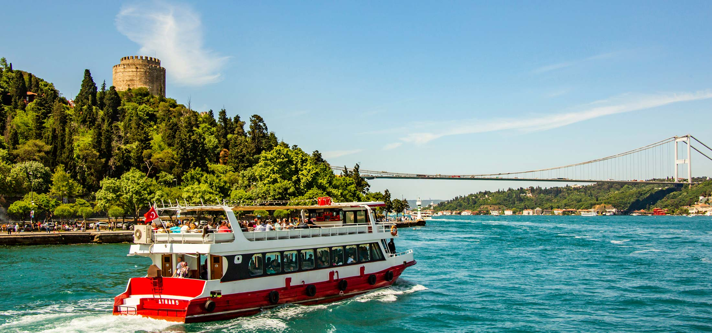
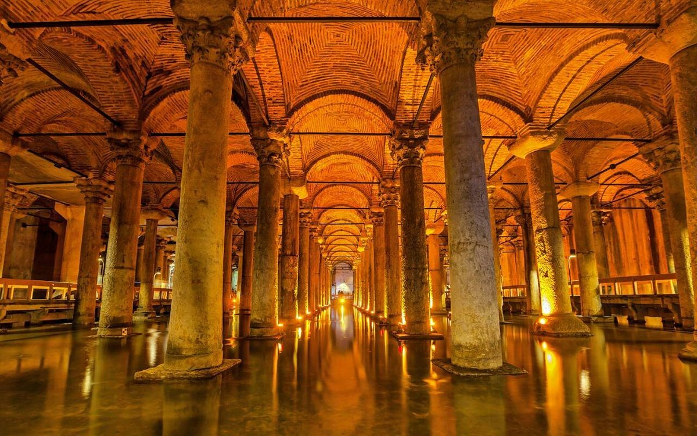
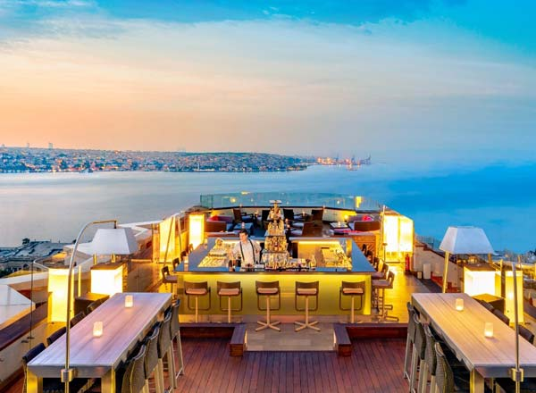
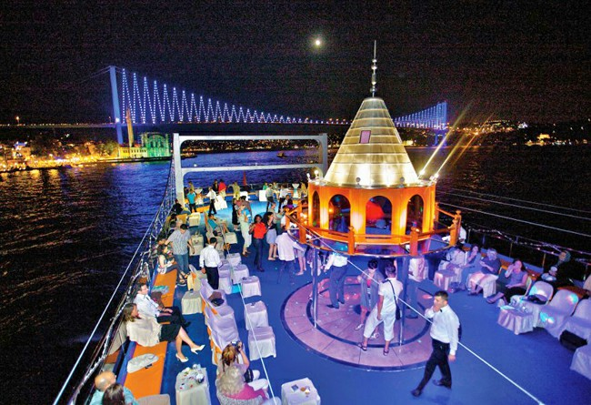
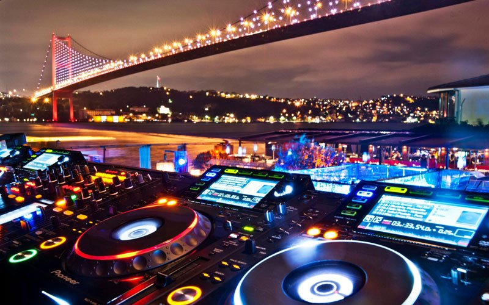

Day
Istanbul is the perfect place to take uniquely beautiful photographs that will liven up your Instagram feed. Visiting and taking pictures at these sites is
an unmatched experience.
Go on a Bosphorous Tour
Visit the Rumeli Fortress

Visit the Blue Mosque, Hagia Sophia, and Basilica Cistern

These sites are all in walking distance of each other and are best when visited during the day, especially morning time because there will be fewer crowds.
Night
Istanbul is just as, if not more, beautiful during the night than it is during the day. You never run out of new spectacles to see, or old history to learn. This city never sleeps!
Visit a Rooftop Restaurant/Bar
Take a Boshphorous Night Cruise with Dinner
Enjoy Live Music in Ortakoy

Most of the fun night activities are in the European side by the water.